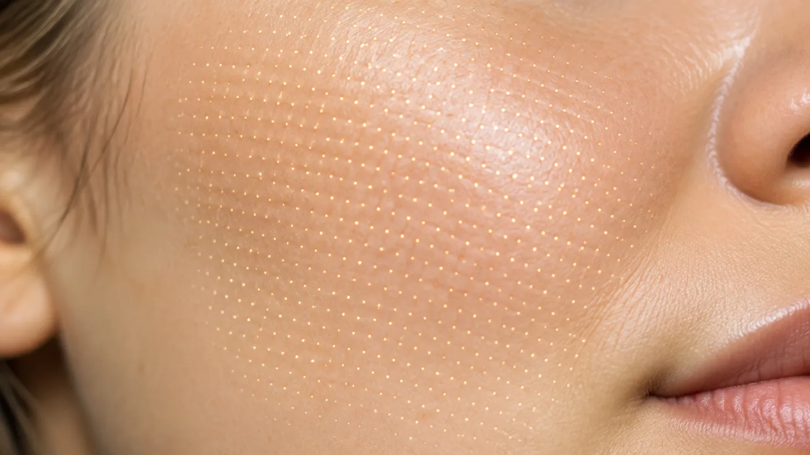

Cihaz Destekli Uygulamalar · Cilt Yenileme
Fraksiyonel lazer: cildi mikro alanlarla yenileme
Fraksiyonel lazer, ışını cildin tamamına değil, birbirinden ayrık çok sayıda küçük alana verir. Her mikro alanda denetimli bir hasar oluşur; aralarda kalan sağlam deri iyileşmeyi hızlandırır. Akne izi, gözenek görünümü ve ince çizgilerde yüzeyin yenilenmesi hedeflenir; hangi modun, hangi derinlikte kullanılacağına cildiniz görüldükten sonra karar verilir.
 Temsilî görsel · yapay zekâ ile üretildi
Temsilî görsel · yapay zekâ ile üretildi
Ne yapar, ne yapmaz
Fraksiyonel lazer deride ne yapar, neyin yerine geçmez?
“Fraksiyonel” kesirli demektir: ışın, yüzeyin bütününü değil, ızgara düzeninde dizilmiş küçük sütunları etkiler. Beklenen değişim, bu sütunlar kapanırken başlayan onarımdan gelir.
İki yaklaşım vardır. Er:YAG lazerin ışığı derideki su tarafından çok güçlü soğurulur; mikro sütunlarda dokuyu buharlaştırarak yüzeyi denetimli biçimde açar. Nd:YAG lazer daha derine ulaşır ve yüzeyi açmadan ısı sütunları oluşturur. Yüzeyi açan yöntemde değişim daha belirgin, iyileşme daha uzundur; açmayan yöntemde iyileşme kısa, katkı daha ılımlıdır. Gerektiğinde ikisi aynı seansta art arda kullanılabilir.
Sütunların arasında kalan sağlam deri bir hücre deposu gibi çalışır ve alanın birkaç gün içinde kapanmasını sağlar; yeni kolajen oluşumu ve derinin yeniden yapılanması ise aylar sürer. En sık yuvarlak kenarlı akne izleri, belirgin gözenek görünümü, göz çevresi ve yanaktaki ince çizgiler ile güneşin yorduğu pürüzlü yüzey için konuşulur; beklenen düzelme kısmidir.
Kullanılan cihaz: fraksiyonel lazer (Fotona SP Dynamis).
Ameliyatın yerine konmaz: sarkan deri fazlalığı ve derin kıvrımlar ışıkla giderilmez; bu tablolar plastik cerrahinin alanındadır. Evde kullanılan ışık cihazlarıyla aynı şey değildir: ev tipi cihazlarda enerji düşüktür; derinlik ayarı, göz koruması ve hekim değerlendirmesi yoktur.
Tek seansta dönüşüm sağlamaz: değişim seanslar biriktikçe ve aylar içinde ortaya çıkar. Sivilceler aktifken yapılmaz: iltihaplı lezyonlar sürerken ısı ve açık mikro alanlar tabloyu alevlendirebilir; önce akne yatıştırılır. Her ize uymaz: buz kıracağı ucu gibi dar ve derin izlerde katkı sınırlı kalır; deriden kabarık izler ve keloid bu yöntemin hedefi değildir.
Yol haritası
Seanslar nasıl kurgulanır, iyileşme hangi sırayla ilerler?
Yüzeyi açan ve açmayan
Er:YAG yüzeyi mikro alanlarda açar, Nd:YAG yüzeyi koruyarak derine ısı verir; seçim cilt tonuna, hedefe ve iyileşmeye ayrılabilecek güne göre yapılır.
Çubuk boyları yalnız karşılaştırma içindir; size özel plan muayenede kurulur.
- Muayene: iz tipi, cilt tonu, güneş ve uçuk öyküsü
- İlaç sorgusu: ağızdan retinoid, ışığa duyarlılık yapan ilaçlar
- Bilgilendirme ve yazılı onam; iyileşme günleri takviminize göre seçilir
- Temizlik, uyuşturucu krem, göz koruması ve soğutmalı tarama
- Yazılı bakım notu ve kontrol randevusu
"Derinliği cihaz seçmez; cilt tonunuz ve iyileşmeye ayırabileceğiniz gün sayısı seçer."
Yüzeyi açan uygulamadan sonraki ilk bir–iki gün güneş yanığına benzer sıcaklık, kızarıklık ve şişlik olur; ardından mikro alanlara denk gelen ince koyu noktacıklar ve pul pul dökülme birkaç gün sürer. Yüzeyi açmayan uygulamada kızarıklık çoğunlukla bir–iki günde geçer. Daha seyrek: uzayan kızarıklık, sivilce benzeri döküntü, uçuk alevlenmesi, geçici koyulaşma. Riski artıranlar: kabuğa dokunmak, güneşe çıkmak, ilk günlerde makyaj ve ağır kremler, asitli ürünlere ya da retinoide vaktinden önce dönmek. Seyrek görülen ama önemsenmesi gerekenler: enfeksiyon, kalıcı renk değişikliği, iz.
Çoğu planda üç ile beş seans, dört ile sekiz hafta arayla yapılır; aralık seçilen derinliğe göre uzar ya da kısalır. Deri bir önceki seansın onarımını bitirmeden yeni seans yapılmaz. Değişim seanslar ilerledikçe fark edilir, son seanstan üç ile altı ay sonra birlikte değerlendirilir. Seans sayısı baştan söz verilmez; sonuçlar kişiden kişiye değişir.
Muayenede her madde ayrıca konuşulur; bir kısmı yalnızca bekleme gerektirir.
- Gebelik ve emzirme: bu dönem bitene kadar lazer uygulamaları planlanmaz.
- Yakın zamanda güneşlenme veya bronzlaşma: deri kendi tonuna dönmeden başlanmaz; uygulamadan önceki en az dört hafta güneşten korunmak gerekir.
- Yüzde uçuk ya da başka bir enfeksiyon: iyileşme beklenir; sık uçuk çıkaranlarda hekim işlem öncesi koruyucu ilaç planlayabilir.
- Keloid ve kabarık iz yapma eğilimi: ciddi bir engeldir; risk açıkça konuşulur.
- Ağızdan isotretinoin ve ışığa duyarlılık yapan ilaçlar: ilacın türüne ve bırakılma tarihine göre bekleme süresi belirlenir.
- Koyu ten, vitiligo ve renk kaybı eğilimi: koyu tende iltihap sonrası koyulaşma daha sık görülür, temkinli ayar ve deneme alanı gerekir; vitiligoda uygulanmaz.
- İyileşmeyi yavaşlatan durumlar: şekeri düzensiz seyreden diyabet, bağışıklığı baskılayan ilaçlar ya da daha önce ışın tedavisi almış bir bölge varsa uygunluk ayrıca tartılır.
- İncelenmemiş ben ya da değişen leke: önce büyütmeli olarak bakılır; kuşkulu lezyonun üzerine atım yapılmaz.

Temsilî görsel · yapay zekâ ile üretildiTakviminize uygun bir plan kuralım
Derinlik, iyileşmeye ayırabileceğiniz günler konuşulmadan seçilmez.
Randevu isteyinGünler geçtikçe artan ağrı, yayılan kızarıklık ya da şişlik, sarı kabuk veya akıntı, ateş, küme hâlinde su toplaması ya da kapanmayan açık bir alan fark ederseniz 0539 933 08 08 numarasından bize ulaşın; ulaşamıyorsanız 112 Acil Çağrı Merkezi’ni arayın ya da en yakın hastanenin acil birimine başvurun.
Bu sayfadaki bilgiler geneldir; kişisel tanı ya da tedavi yerine geçmez. Fraksiyonel lazer deride bilerek küçük hasar alanları oluşturan bir işlemdir; herkese uygun değildir ve enfeksiyon, renk değişikliği, iz gibi istenmeyen sonuçlar görülebilir. Yapılıp yapılmayacağına muayeneden sonra hekim karar verir. Sonuçlar kişiden kişiye değişir.
Uygulama Uzm. Dr. Rahmi Cebeci tarafından, Sağlık Bakanlığı onaylı Medikal Estetik Uygulama Sertifikası kapsamında, Bakırköy’deki muayenehanemizin cihaz odasında yapılır. Bu çerçevenin dışında kalan talepleri neden karşılamadığımızı neden bazı işlemleri yapmıyoruz sayfasında açıkladık. Konunun bütününü akne izleri için akne ve akne izi, gözenek ve pürüzlülük için gözenek ve cilt dokusu sayfalarında anlattık; enerjiyi yüzeyden değil iğne ucundan veren seçenek için altın iğne radyofrekans sayfasına bakabilirsiniz.
Sık gelen sorular
Merak ettiğiniz soruya dokunun, yanıtı burada açılsın
Bir adım ötesi
Cildiniz ve takviminiz için doğru derinliği birlikte seçelim
Hangi modun, kaç seansla uygun olduğu muayene yapılmadan söylenemez.
Metni hazırlayan ve tıbbi açıdan gözden geçiren: Uzm. Dr. Rahmi Cebeci (Aile Hekimliği Uzmanı · Medikal Estetik Sertifikalı).
Buradaki anlatım herkese yöneliktir; size özel bir teşhis ya da tedavi planı sunmaz, muayenenin yerini tutmaz. Her uygulamanın etkisi kişiye göre farklı olur.